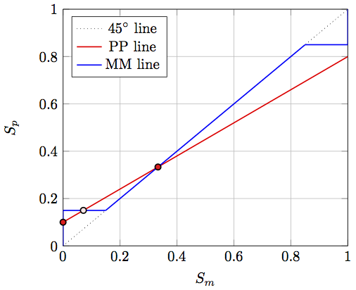

Drawing the diagram of a stylized version of Krugman’s Increasing Returns and Economic Geography
For educational purposes we teach in the second year’s course regional and urban economics a simplified version of Krugman’s model in his paper titled Increasing Returns and Economic Geography. The model we have adopted goes as follows:
We consider a simplified economy with two regions and 1 (million) workers ( \(L=1\) ) in total. Region 1 is inhabited by 100,000 farmers (bound to their land so immobile), while in Region 2 there are 200,000 farmers. Note that in the notation of Krugman this boils down to \(\pi_1 = 0.1\) and \(\pi_2 = 0.2\). All other workers work in manufacturing. Assume now that there is a representative firm that has to choose if and in which region if would settle or that it would settle in both regions by having two branches (one in each region). The fixed costs to establish a firm (or branch) is 0.15. The transportcosts to move goods between region 1 and 2 are equal to 1 and each worker consumer consumes exactly one unit of the final product.
It is now up to the student to determine the equilibria in this economy (whether stable or unstable) and identify the trade-off for the firm. Doing this the most insightful and simple way is draw the so-called PP-line and the MM-line. Using the Tikz package within Latex simplifies this enormously. The following code shows how this can be done.
% Krugman91---Firm location in two regions
% Author: Thomas de Graaff
\documentclass{article}
\usepackage{tikz, verbatim}
\usepackage{pgfplots} %include other needed packages here
\usepackage[active,tightpage]{preview}
\PreviewEnvironment{tikzpicture}
\setlength\PreviewBorder{0pt}%
\begin{comment}
:Title: Krugman91---Firm location in two regions
:Tags: Economic geography, economics, location behavior,
multiple equilbria
:Author: Thomas de Graaff
\end{comment}
\begin{document}
\begin{tikzpicture}[scale=1,thick]
\usetikzlibrary{calc, intersections} %allows coordinate calculations.
% Define parameters
\def\L{1} % Total amount of workers (normalized)
\def\Pa{0.1} % Total amount of farmers in regio 1
\def\Pb{0.2} % Total amount of farmers in regio 2
\def\x{1} % Total demand (normalized)
\def\F{0.15} % Fixed costs to set up a plant
\def\t{1} % Transportcosts
\def\Fa{\F/(\t*\x)}
\def\Fb{1-\F/(\t*\x)}
\def\Eq{(\Pa/(\Pa+\Pb)}
\def\Eqa{((\Fa-\Pa)/(1-\Pa-\Pb)}
\def\Eqb{((\Fb-\Pa)/(1-\Pa-\Pb)}
\def\Eqleft{min(\Fa-\Pa, 0)}
\def\Eqright{max(\Fb-(1-\Pb), 0)}
\begin{axis}[
restrict y to domain=0:\L,
samples = 1000,
xmin = 0, xmax = \L,
ymin = 0, ymax = \L,
xlabel=$S_m$,
ylabel=$S_p$,
y axis line style={-},
x axis line style={-},
grid=major,
legend pos=north west,
legend entries={45$^\circ$ line,PP line, MM line}
]
\addplot[dotted, mark=none, domain=0:\L] {x};
\addplot[thick, red, mark=none, domain=0:\L] coordinates {(0,\Pa) (1,1-\Pb)};
\addplot[thick, blue, mark=none, domain=0:\L] coordinates {(0,0) (0,\Fa)};
\addplot[thick, blue, mark=none, domain=0:\L] coordinates {(1,1) (1,\Fb)};
\addplot[thick, blue, mark=none, domain=0:\L] coordinates {(0,\Fa) (\Fa,\Fa)};
\addplot[thick, blue, mark=none, domain=0:\L] coordinates {(1,\Fb) (\Fb,\Fb)};
\addplot[thick, blue, mark=none, domain=0:\L] coordinates {(\Fa,\Fa) (\Fb,\Fb)};
\addplot[thick, mark=*, fill=red!90] coordinates {(0,\Pa+1000*\Eqleft)};
\addplot[thick, mark=*, fill=red!90] coordinates {(1,1-\Pb+1000*\Eqright)};
\addplot[thick, mark=*, fill=red!90] coordinates {(\Eq,\Eq)};
\addplot[thick, mark=*, fill=red!10] coordinates {(\Eqa,\Fa)};
\addplot[thick, mark=*, fill=red!10] coordinates {(\Eqb,\Fb)};
\end{axis}
\end{tikzpicture}
\end{document}This produces the following diagram:

Clearly, there are with this configuration 3 equilibria; two are stable and one is unstable.